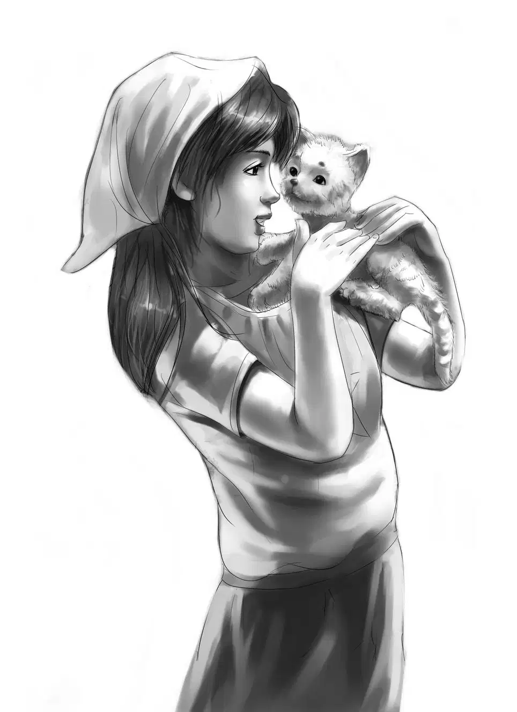
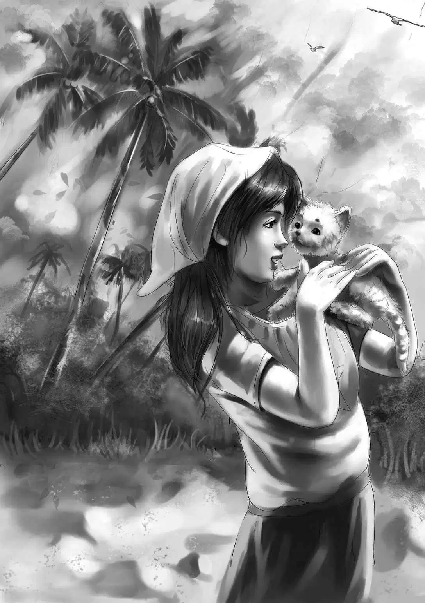
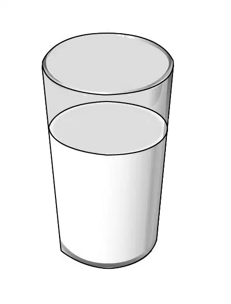
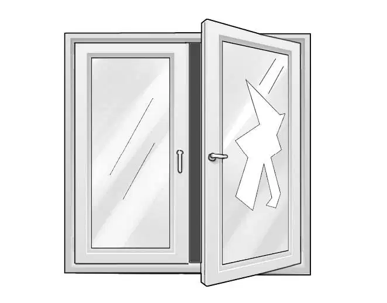

New Trick or an Old Dog

海滩假期的最后一天来临时，亨利建议道：“咱们不如打个电话，请爷爷来参加海滩野餐告别会，怎样？”
“他正好可以见见我们的新朋友——李先生，雷恩小姐和玛丽小姐。”班尼补充道。
“我想雷恩小姐已经完成那幅肖像画了。”维莉说。
杰西说道：“咱们来个全家福野餐，两位小姐一定会喜欢的。”
奥登先生很快回话了，说他十分乐意来参加野餐会，还说到时候会开着他的旅行车过来，回去时，班尼和维莉可以坐他的车，亨利和杰西就坐那辆蓝色小车。
杰西负责准备工作，她吩咐道：“你们男孩子得为简姑婆和安迪叔叔打扫好客厅，保证房车像我们刚来时那么干净，维莉负责擦灰，我来做三明治。”
于是，兄妹四人分头行动，不大一会儿，房里的一切都变得井然有序。
杰西继续安排道：“我们还得在沙滩伞下面摆上四张椅子，说不定还得摆上桌子，不然让爷爷端着一大堆茶杯、碟子和刀叉吃饭，那怎么行？”

“我也不乐意这样吃。”班尼说。
“那么，到时候你也坐到桌子旁吧！”杰西回答道，“每个人都要感觉舒服自在才好。”
话音未落，一辆旅行车便停到了房车后。“有人在家吗？”一个熟悉的声音问道。
“是爷爷！”维莉欢呼道，“快进来吧！”
与此同时，又一个声音从海滩上传来：“你们这是在等客人吗？”
“啊，是李先生，快请进！”杰西说，“爷爷也是刚到。”
“你好啊，阿丹！”奥登先生打了声招呼。
“嗨，詹姆斯。”李先生笑着回应道。
“你们俩居然认识？”班尼吃惊不小。
“哦，那是当然！”奥登先生回答道，“阿丹和我在纽约的时候就是多年的老朋友，他知道你们。能和你们熟络起来，他开心得很。”
“是您要求他照看我们的吗？”班尼追问道。
“那倒没有！我始终相信，你们能处理好自己的事儿，即使有麻烦，你们也能找到帮助你们的人。”
“这要怪我！”李先生说，“是我忍不住想亲近你们。每天我都巴望着过来看看你们，这对我来说，是一种乐趣。我很开心，所有的一切都进展得很顺利。”
“那真是再好不过了！”爷爷说道。
“是啊，不过我还有个主意，可以锦上添花！”李先生坐到他常坐的椅子上，笑着看向奥登先生，“这是我的专用椅，詹姆斯。”
“好吧，那这把就是我的啦！可别让我坐在沙地上，不然我一屁股坐下去，就不知道该怎么站起来了。”
“我知道，”班尼说，“亨利和我把您拉起来，不就行了吗？”
“是啊，是啊！”奥登先生说着，将目光转向湛蓝的海水，“那么，来说说你的想法吧，阿丹。”
李先生脱口而出道：“露丝·雷恩是位出色的画家，她的画作在纽约十分畅销。每年夏天都有很多游客来这儿旅游，他们中肯定有不少人喜欢露丝的猫咪画像。我认为，露丝是时候在碧乌镇举办一次画展了。”
“这真是一个有意思的想法，”奥登先生说，“不过，你是怎么知道雷恩小姐住在这儿的？别人都不知道呐！”
“哈，我来这儿已经有好长时间了！”李先生回答道，“以前就听说雷恩小姐住在这附近，于是我猜她应该就住在家族留下的塔楼屋里。不过，我知道她不好客，所以没人见过她，只见过她的朋友和管家——玛丽小姐。”
“那您后来是如何确定，雷恩小姐真的就住在塔楼屋呢？”班尼问道。
“我只是觉得，女孩们总会出去透透气吧？结果真被我发现，她们喜欢半夜来海滩，散很久的步。我想，假如我跟踪她们的话，说不定雷恩小姐会和我说话，可是她并没有。”
维莉说：“雷恩小姐早就知道您是谁啦！而且对于您的跟踪，我想她是相当开心的。”
爷爷说道：“咱们还是回到画展的话题上吧！你真的认为雷恩小姐会喜欢吗？孩子们似乎都认为她很腼腆。”
“她是很腼腆，不过我想你的孩子们已经帮助她认识到：只要你愿意给别人机会，别人也会和善以待。”
班尼说道：“雷恩小姐和玛丽小姐知道，碧乌镇流传着很多关于她们的流言。小孩子们都说，塔楼屋里住着一个老巫婆，她养了100只猫。甚至有个男孩莫名其妙打碎了她们的玻璃，只是为了好玩。”
“是啊！”李先生说。
“雷恩小姐或许很腼腆，”维莉补充道，“不过她知道自己是位出色的画家。”
“既然她能出售自己的作品，”李先生说，“应该也会同意开画展。更何况，还有个原因，会使得她心甘情愿。”
“什么原因？”奥登先生问道。
“假如我告诉她，画展赚来的钱将全部用来建流浪猫庇护所呢？那可是她非常乐意做的事情。”
“这主意太棒了！”杰西说，“我敢肯定她也会这么想。不过我不知道她有没有足够的作品开画展。”
“她有！”李先生说道，“她在纽约有不少作品呐！詹姆斯，我想只要你开口，那些收藏者会把画借给我们的，这将是一个多么有意思的画展啊！”
维莉说道：“我想，雷恩小姐肯定会把我抱着阿里的那幅肖像送去参展呢！”
“这次画展，有利于碧乌镇的人们去了解雷恩小姐。”班尼说。
“我也这么认为。”杰西赞同道。
“那么，我想是时候让亨利出发去接女士们过来了。”李先生说。
“他已经出发了。”杰西告诉他。
蓝色小车回来了，雷恩小姐提着一个篮子，说道：“我给维莉带了份礼物。”接着，她猛不丁看到了李先生，于是低声打了个招呼：“你好，阿丹，已经好多年没见了。”
“现在我们可是邻居了！”李先生说，“希望以后能经常碰面。呃，篮子里是什么？看起来像是活的。”
“没错！”雷恩小姐回答道，“要知道，维莉特意为我做模特……”
维莉紧盯着篮子——它稍稍动了动。
雷恩小姐打开篮子，抱出一只小猫咪——这是只纯白色的小猫，有着长而柔软的毛发和蓝色的眼睛，像一个毛毛球。
“噢，多可爱的小家伙啊！”维莉惊喜地叫道，眼睛闪闪发亮，“我可以抱抱它吗？”
雷恩小姐把小猫咪放到沙滩上，它坐在那儿，小尾巴直直地翘起来。维莉帮它把尾巴盘在身边，谁知小猫立刻将它展开，又重新盘起，盘得和之前的一模一样。
“看哪！”班尼笑道，“它要自己的事情自己做呐！”
维莉恍然大悟道：“没错，猫咪都这样！我怎么给忘了呢？真是养太久狗狗了。”
这时，小毛毛球向维莉胸口爬了上来，小爪子就像松针一样锋利。
维莉将它放下去，但它又爬了上来，似乎知道自己就是维莉的宝贝，就像老望望知道自己是杰西的狗狗一样。
“它叫什么名儿？”班尼问道，“或许还没有名字？”
雷恩小姐回答道：“有的，它叫糖饼，是一只血统纯正的猫咪，它妈妈叫蓝风铃三世，奶奶叫白三叶二世。”
维莉在沙滩上放了条蓝色的绳子，小猫咪立刻像小老虎一般扑了上去，撕咬翻腾，每个姿势都漂亮极了。
雷恩小姐聚精会神地看着小猫，众人也将目光落到她身上，她那专注的神情，就像要把猫咪的每个动作画下来一般。
“对了，我还带了份礼物，是送给奥登先生的。”雷恩小姐说着，将维莉的肖像画拿了出来，画像非常漂亮，栩栩如生。
奥登先生开心极了，他的目光轮番扫视着肖像和维莉，心里却在想，不知雷恩小姐是否喜欢开画展这个主意。

“糖饼啊，咱们开饭啦！”班尼说，“不然给你来点热牛奶？”
杰西走进屋子去拿热牛奶，雷恩小姐嗅了嗅空气中的味道：“这咖啡闻起来好香。”
班尼和亨利端出好几盘三明治、泡菜和几杯热咖啡，不一会儿，四处便变得悄然无声，大伙儿都忙着埋头大吃起来。
消灭掉第二个三明治之后，爷爷向李先生使了个询问的眼色，李先生会意地点了点头。
于是，奥登先生字斟句酌地开始说道：“雷恩小姐，我们有个想法，是关于你，喜欢你作品的人，还有流浪猫的。”
听到流浪猫这几个字，雷恩小姐立刻抬起头，看向奥登先生。任何有关猫咪和流浪猫的字眼，她都非常感兴趣。
奥登先生向她详尽解释了为流浪猫建立庇护所的计划：在庇护所里，流浪猫可以得到精心的照顾，直到被好人家收养。
“我对这个计划非常感兴趣，”雷恩小姐听完后说道，“但它背后应该有隐情吧！”
“没错！”班尼开心地说，“您真聪明，雷恩小姐。”
“隐情倒没有，”李先生解释道，“不过，建立庇护所是需要钱的。你可以举办一次小范围内的个人画展，将收入用于庇护所。我想那些喜欢猫的人们应该会来参加的。”
“或许那些不喜欢猫，只喜欢画的人也会来。”杰西补充道。
“你们很聪明，”雷恩小姐点了点头，“知道我的软肋在哪儿，也知道我可能会同意这个计划。”
“噢，噢，真希望您能同意！”维莉说。
此时，糖饼已经累得趴在维莉的膝盖上睡着了，一只小爪子仍抓着那条蓝色的绳子。
“如果是你的愿望，那我就照办好了！”雷恩小姐说，“只不过，你的肖像是目前为止我最好的作品，你介意把它展出吗？”
维莉说道：“不会啊，我不会介意！也许之前会，但现在绝对不介意了。”
班尼说：“我也不介意！不过维莉真让我吃惊，一般情况下她还是挺在意这类事儿的。”
说话间，三明治很快就被吃完了，煮鸡蛋也被消灭得精光，就连泡菜都没了。
吃完曲奇之后，李先生便告辞了，爷爷目送着他在海滩上越走越远，发现他并没有带理查，也没有带探宝仪。
爷爷说：“阿丹和我很像。”
“哦，不对，爷爷，”维莉说，“没那么像啦！”
“我说的是思维方式很像，”爷爷说，“他喜欢速战速决，不拖泥带水。我把话放在这儿，他绝对已经将画展全盘计划好了，也清楚该寻求哪些人的帮助，并且我敢确定，就连动物庇护所，他也挑好了地方，甚至在脑海里敲定了经理的人选。还有，他很可能想要你——雷恩小姐，画一幅特别的画像做宣传用。”
“噢，我义不容辞！”雷恩小姐说，“不过，现在玛丽和我必须得走了，我知道你们都想尽快回家。我还要回去跟蓝风铃解释，为什么抱走了它的小宝贝儿，不过它应该不会介意，因为它还有个小宝贝儿。”
奥登兄妹让爷爷继续坐着休息，他们则一起送两位女士回家，大家依依惜别，并筹划着下一次的见面。
雷恩小姐泪眼蒙眬地向维莉道别，“你都不知道你帮了我多大的忙。”她低声说道。
“别忘了感谢阿里，多亏它逃出去，维莉才有机会认识您。”班尼说。
大家都笑了起来，随后，两位女士便走进了塔楼屋里。

回来的路上，奥登兄妹一路沉默着，直到看见奥登先生用他的手杖在沙滩上画着什么，话题才又活跃起来。
“我敢打赌，对于动物庇护所，您肯定有了新点子。”班尼说。
“没错！”爷爷回答道，“快过来，把椅子收进去，班尼，咱们该回家了。”
迅速打包完行李后，杰西将剩下的食物放进一个大篮子，准备带回家。他们又四处打量了一下屋子，房车已经干净如初，随时可以让简姑婆和安迪叔叔舒服地住进来了。
爷爷、班尼，还有维莉和她的小猫咪坐进了第一辆车，亨利和杰西则坐着那辆蓝色小车跟在后面。
离家越来越近了，维莉不由得担忧道：“现在的关键问题是望望，咱们不能伤了它的心，我想它不会喜欢糖饼的，我们得想个办法，让它接受这只小猫。”
班尼建议道：“要让望望觉得，收留小猫咪是它的主意，那它就会乐意了，还会把糖饼当作自己的猫宝贝。”
维莉笑了：“可我们该怎么做到这一点呢，班尼？快告诉我！”
这个问题可把班尼难住了。
倒是糖饼自己找到了办法，它喜欢和所有动物交朋友，这是它与生俱来的天性。
望望正懒洋洋地趴在客厅地板上，一听到汽车的刹车声，它立马站了起来，汪汪叫着，表示着欢迎，不过并没有挪步——它已经太老了。
一家人走进了客厅，维莉将白色的小猫咪放到地板上，糖饼很快向望望跑去，奶声奶气地喵喵叫着，小家伙还没见过狗狗呢。
望望倒是见过猫咪，但从没见过这么可爱的小奶猫，糖饼围着望望的前爪转来转去，时不时还用小脑袋蹭蹭望望，看起来小猫咪很喜欢它。
望望躺了下来，小猫咪也累了，转了三圈后，它也在狗狗的前腿中间躺了下来。望望抬头看了看维莉，似乎在说：“现在我也有自己的朋友了！”
维莉惊喜地说：“噢，望望，你变了，我真是太高兴啦！”
奥登先生笑着说：“这倒是为你们的沙滩之旅画了个完美的句号！”
“不是句号，爷爷！”班尼说道，“这是新的开始呢！”